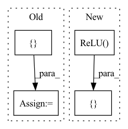

Pattern ID :1855

Before Change
// Down sampling residual blocks
for _ in range(4):
down_layers += [ResNetBlock(256)]
// Class Activation Map
self.gap_fc = nn.Linear(256, 1, bias=False)
After Change
nn.Linear(256, 256, bias=False),
nn.ReLU(inplace=True)]
else:
fc = [nn.Linear(image_size * image_size * 16, 256, bias=False),
nn.ReLU(inplace=True),
nn.Linear(256, 256, bias=False),
nn.ReLU(inplace=True)]
self.gamma = nn.Linear(256, 256, bias=False)
self.beta = nn.Linear(256, 256, bias=False)
In pattern: SUPERPATTERN
Frequency: 3
Non-data size: 4
Instances
Fragment ID: 4947033
Project Name: lornatang/ugatit-pytorch
Commit Name: 29402d1cfc1f9bbb66eed660fd84b48adcbdc188
Time: 2020-05-19
Author: liuchangyu1111@gmail.com
File Name: ugatit_pytorch/model.py
M Class Name: Generator
N Class Name: Generator
M Method Name: __init__(3)
N Method Name: __init__(3)
M Parent Class: nn.Module
N Parent Class: nn.Module
M File Name: ugatit_pytorch/model.py
N File Name: ugatit_pytorch/model.py
M Start Line: 25
M End Line: 54
N Start Line: 100
N End Line: 142
'>
Before Change
// TODO: add whitening
self.ic = nn.Conv2d(3, 64, kernel_size=1)
self.ib = nn.BatchNorm2d(64, track_running_stats=False, eps=1e-12, momentum=0.8)
self.net = nn.ModuleList([
ConvGroup(64, 128, short=False),
ConvGroup(128, 256, short=True),
ConvGroup(256, 512, short=False),
])
self.lin = nn.Linear(512, num_classes, bias=False)
After Change
def __init__(self):
super().__init__()
// TODO: add whitening
self.net = nn.ModuleList([
nn.Conv2d(3, 64, kernel_size=1),
nn.BatchNorm2d(64, track_running_stats=False, eps=1e-12, momentum=0.8),
nn.ReLU(),
ConvGroup(64, 128, short=False),
ConvGroup(128, 256, short=True),
ConvGroup(256, 512, short=False),
GlobalMaxPool(),
nn.Linear(512, num_classes, bias=False)
])
// note, pytorch just uses https://pytorch.org/docs/stable/generated/torch.nn.CrossEntropyLoss.html instead of log_softmax
def forward(self, x):
'>
Fragment ID: 4947043
Project Name: geohot/tinygrad
Commit Name: e4db0c820f98e9e02fa96d8818fe0f5eed6cfd71
Time: 2023-04-18
Author: geohot@gmail.com
File Name: examples/hlb_cifar10_torch.py
M Class Name: SpeedyResNet
N Class Name: SpeedyResNet
M Method Name: __init__(1)
N Method Name: __init__(1)
M Parent Class: nn.Module
N Parent Class: nn.Module
M File Name: examples/hlb_cifar10_torch.py
N File Name: examples/hlb_cifar10_torch.py
M Start Line: 37
M End Line: 44
N Start Line: 40
N End Line: 49
'>
Before Change
def __init__(self, hparams):
super(Encoder, self).__init__()
convolutions = []
for _ in range(hparams.encoder_n_convolutions):
conv_layer = nn.Sequential(
ConvNorm(hparams.encoder_embedding_dim,
hparams.encoder_embedding_dim,
kernel_size=hparams.encoder_kernel_size, stride=1,
padding=int((hparams.encoder_kernel_size - 1) / 2),
dilation=1, w_init_gain="relu"),
nn.BatchNorm1d(hparams.encoder_embedding_dim))
convolutions.append(conv_layer)
self.convolutions = nn.ModuleList(convolutions)
self.lstm = nn.LSTM(hparams.encoder_embedding_dim,
int(hparams.encoder_embedding_dim / 2), 1,
After Change
super(Encoder, self).__init__()
// convolution layers followed by batch normalization and ReLU activation
activations = [nn.ReLU()] * num_convs
conv_out_channels = [conv_channels] * num_convs
self.conv1ds = BatchNormConv1dStack(embed_dim, conv_out_channels, kernel_size=conv_kernel_size,
stride=1, padding=(conv_kernel_size -1) // 2,
'>
Fragment ID: 4947044
Project Name: thuhcsi/tacotron
Commit Name: 4c1680d50b9c91bf13e13c823df949895a3c77c6
Time: 2021-03-17
Author: johnson.tsing@gmail.com
File Name: model/tacotron2.py
M Class Name: Encoder
N Class Name: Encoder
M Method Name: __init__(7)
N Method Name: __init__(2)
M Parent Class: nn.Module
N Parent Class: nn.Module
M File Name: model/tacotron2.py
N File Name: model/tacotron2.py
M Start Line: 190
M End Line: 206
N Start Line: 40
N End Line: 53